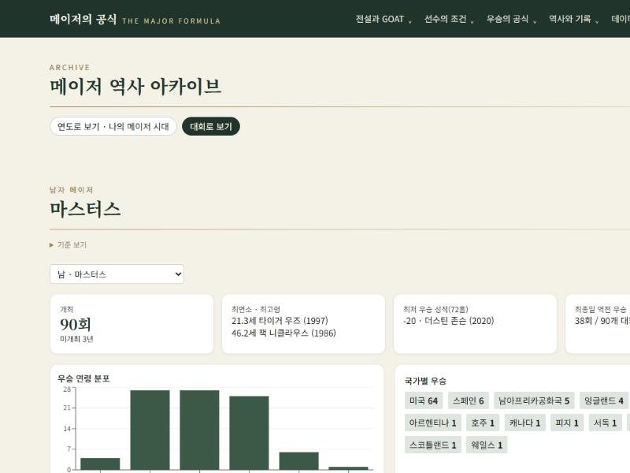

About the service
It collects the all-time winners of men's and women's professional golf majors such as the Masters, the PGA Championship, the US Open and The Open, edition by edition. Change the conditions yourself to see how old winners were, whether a 54-hole leader held on, and which country has won the most.
Set your own weights to build an all-time ranking of golfers, then continue to the players who are unusually strong in majors and the height distribution of champions. A history archive of each tournament and course is included.
The rankings and ratios here are the service's own calculations based on Wikipedia records. They are not official statistics from the governing bodies, nor an official GOAT ranking. Men and women are calculated separately.
What is in it
Change the weights for major wins, career tour wins, major share, wins per start, top-10 rate, five-year peak and long-term dominance, and the ranking changes with them. Pick men, women or combined, current majors or including past ones, and filter by number of major wins.
Narrow winning-age distributions and the share of 54-hole leaders who hold on or are overtaken by conditions such as tournament, period and age at the win. Leader wins and comeback wins are two shares of the same set of results.
Compares the share of a golfer's total tour wins that came in majors. Only players whose official tour win counts and major win counts are tallied on the same basis are compared.
Starts with the height distribution of major champions. The analysis covers winners only and does not mean that being tall helps win.
For each tournament, see the number of editions held, youngest and oldest winners, lowest winning score, wins by country and all past winners. It covers 12 tournaments including the Masters, PGA Championship, US Open and The Open.
Profiles of courses such as Augusta National, the Old Course at St Andrews, Pebble Beach, Shinnecock Hills and Evian Resort, with their design, character and the major records set there.
Screens

Change the weights and the ranking changes

Winning-age distribution by condition

History archive by tournament
Data and calculation rules
Wikipedia records can change, so every data refresh goes through automated checks and a human review of the results. Cross-checking against official records is still to be done.
Tech and how it was made
Status
Open to everyone right away. The data is refreshed and checked after each new major; automatic collection is not turned on yet.